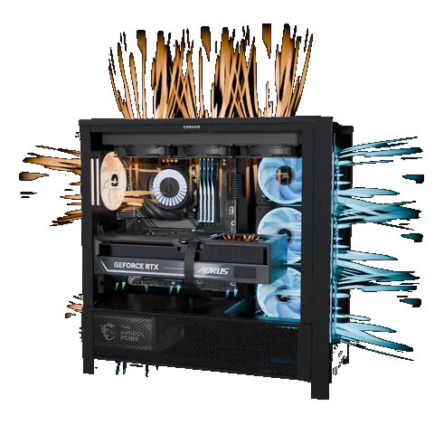
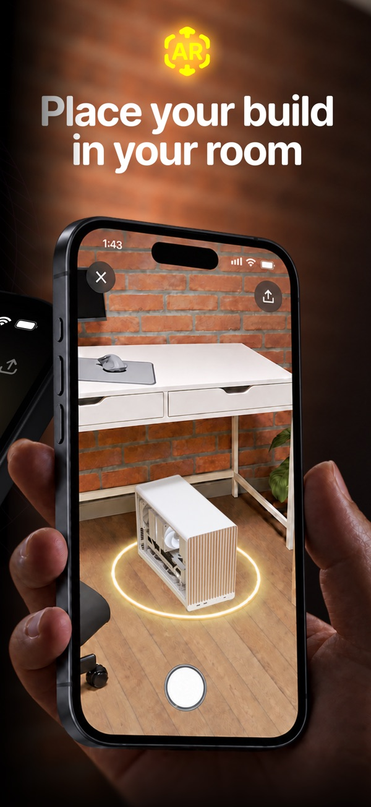

BuildCores Pro 到底值不值得掏钱——一个装机老炮的付费决策账本
把 BuildCores 免费版和 Pro 订阅的功能边界拆得明明白白，按轻度装机、主力玩家、硬件从业者三档算账，帮你三秒判断该不该付钱。
它到底值不值得掏钱？
2026 年，BuildCores 已经不是那种需要装机十年资历才敢说"我懂它"的小众工具了。Reddit、B站、Digital Foundry 的评测把这款 3D 装机器推到了装机圈的台前——但热闹归热闹，真正下单之前，我得先把这笔账算清楚。免费版给了什么，Pro 订阅多了什么，哪些人该闭着眼付，哪些人再等等，哪些人永远不用掏这个钱。
先把功能边界拆透：免费版到底给了多少
先给没碰过的朋友补个底：去BuildCores官网看一眼就知道，它的核心卖点是 3D 可视化装机——把 PC 零件拖进虚拟机箱里，所见即所得地检查兼容性、风道走向、甚至投到真实桌面看尺寸。这套东西在 PCPartPicker 那样的表格工具里是完全做不到的。
免费版的慷慨程度超过了我的预期。它允许你：
- 不注册也能开始装机，直接去官方下载开跑，官方在定价页明写"永久免费、无需账号"
- 完整的 3D 装机台，挑零件、拖位置、基础兼容性检查（显卡限长、散热限高、CPU 主板接口）
- 注册免费账号后，配置云端保存、网页和手机 App 跨端同步、分享可旋转的 3D 链接
- 浏览社区里别人的装机配置
听起来已经够用了对吧？别急，Pro 的存在意义就在于它把"好用"推进到了"好用到离不开"。
Pro 版多了什么——订阅制的鸡贼与诚实
从功能表看，Pro 版解锁的东西不是"给免费版阉割"，而是进阶能力：
| 功能 | 免费版 | Pro 订阅 |
|---|---|---|
| 3D 装机 & 兼容检查 | ✅ | ✅ |
| 云端保存 & 跨端同步 | ✅ | ✅ |
| 分享 3D 配置链接 | ✅ | ✅ |
| 风道可视化 | ❌ | ✅ |
| AR 桌面预览 | ❌ | ✅ |
| 进阶兼容性检查（线缆、竖装、散热器内存冲突） | 部分 | 完整 |
| 性能估算（游戏帧数、功耗预算） | ❌ | ✅ |
| 社区高级筛选 | ❌ | ✅ |
定价这块挺诚实——它不搞那种"免费版只给 3 次装机机会"的订阅套娃，你想装多少台都行，只是进阶功能不开。这种"先让你用爽，再让你升级"的策略反而比硬限流更让人买单。
价格档位呢？我查了一下——月付制，年付折算下来大概是一个月两杯奶茶的钱。按订阅算的话，这个定价在同类 SaaS 里属于中等偏下，因为它不按装机台数、不按分享次数卡你。

算账：三档用户对号入座
光列功能没用，得按你怎么用它来算。我把用户分成三档，逐档算一遍。
轻度装机：一年装一台的普通人
典型画像：大学新生配第一台游戏本替换机、办公室家用轻办公机、升级显卡/SSD 这种局部改造。
免费版完全够用。你花两个小时把机箱拖进 3D 场景、把显卡主板装进去，基础兼容检查会告诉你"装不装得下"。风道可视化？你可能连正压负压是什么都没搞清楚，不需要。AR 预览？配一台 5000 块的机器不值得花这个钱去看桌面尺寸。
每单位时间成本：零。用 BuildCores 免费版代替查参数、翻评论区，至少省你 2~3 小时的资料时间，光这点就值了——而且一分钱没花。
结论：这类人这辈子大概率不用买 Pro。
主力玩家：半年装一台、帮朋友装的人
典型画像：装机玩家、硬件 UP 主助理、帮公司采购工作站的行政、自己玩水冷分体的发烧友。
这档开始纠结了。免费版的兼容检查在大部分场景没问题，但进阶冲突（散热器挡内存马甲、显卡竖装延长线够不够长、12V 供电口朝里还是朝外）免费版是扫不出来的——这些恰好是主力玩家最容易踩的坑，具体的冲突判断规则在BuildCores文档里写得很细。风道可视化对水冷分体装机几乎是刚需，AR 预览能让你在下单之前就看到机器放桌面会不会挡住显示器升降架。
时间账：Pro 订一年，假如你在这期间装 6 台机器，每台因为 Pro 的功能帮你省下一次"装完才发现冲突"的返工（返工至少 2~3 小时，包括退货换货的麻烦），Pro 的订阅费折算下来是每台机器几十块钱换 2~3 小时 + 不踩坑的安心。这笔账怎么算都值。
但注意有个例外：如果你每次装的都是标准中塔机箱 + 标准配置，从来不玩小机箱 ITX、不来水冷、不玩竖装，那 Pro 再多功能你也用不上——继续免费版就行。

硬件从业者：装机店、评测团队、DIY 配件销售
典型画像：装机店装机师、硬件媒体评测员、显卡机箱厂商的配件设计师。
这档人闭眼买。原因不是"功能多"，而是效率碾压。
装机店一天可能要出 5~10 套配置，每套都需要先给客户出一份可视化方案、确认兼容性、生成分享链接给客户确认再动手——免费版能做这件事，但 Pro 的进阶检查能让你少做至少 20% 的返工。AR 预览可以直接在店里让客户拿着手机把机器投到桌面上看效果，比拿参数表说服力强十倍。
评测团队更不用说——你评测一款新显卡，需要把它装进 5 款不同机箱里测兼容性，免费版能做但 Pro 把进阶冲突一次扫完，省下来的时间可以多写两篇评测。
成本账：Pro 的年费对从业者来说是工具成本，不是"消费"。相当于你买一把好螺丝刀——钱花了，但这把螺丝刀让你每天多拧 10 颗螺丝、拧得更准。
替代方案：不付钱你还能怎么玩
觉得 Pro 贵？有几条路可以走，但每条路都有代价：
① 坚持用免费版 + PCPartPicker 表格交叉验证
这是我最推荐的"省钱但不降低体验"的组合。BuildCores 免费版做 3D 可视化终验，PCPartPicker 做参数筛选和价格比对——两者互补，你只需要额外花 15 分钟在 PCPartPicker 上过一遍参数表。代价就是多花 15 分钟，但能覆盖掉免费版进阶检查的盲区。
② 等社区配置
BuildCores 免费版可以浏览社区别人的装机方案。找到跟你想装的配置接近的帖子，直接复用就行——代价是你得花更多时间找合适的模板，而且改配置时得自己手动复核进阶冲突。
③ 硬上 + 装完才发现冲突
坦率说，这是大部分新手走的路。显卡长了 3mm 装不进去、散热器顶内存马甲、水冷管子够不着……每一次踩坑都要退货换货再重新等 3~7 天。算下来时间成本远超过 Pro 的订阅费。我自己就踩过显卡限长的坑，那次退货折腾了一周多——之后我就决定工具能帮我提前发现的东西，绝不用"装完再说"来赌。
最后的判断标准
写这么多其实就想说一件事：你该不该为 BuildCores Pro 花钱，跟"你装过多少台机器"无关，跟"你踩过多少次装机坑"有关。
- 踩过坑、装过至少两台、开始追求精细化配置——闭眼买
- 第一次装机、只配过标准中塔、对进阶功能没概念——继续免费用
- 想试水但不确定能不能用满——先买一个月，能用到第三周就续年付
订阅制的好处就在这——不满意退了也不亏。BuildCores 免费版已经足够让你把 3D 装机这件事"玩明白"，Pro 只是帮你把"玩明白"推进到"玩得专业"。至于那一步要不要迈，就看你愿意为"少踩一次坑、省两小时返工时间"掏多少钱。这套软件的资料我也同步维护在几个仓库里，主仓库是GitHub，国内访问不了的话还有Gitee和GitCode两个备份。